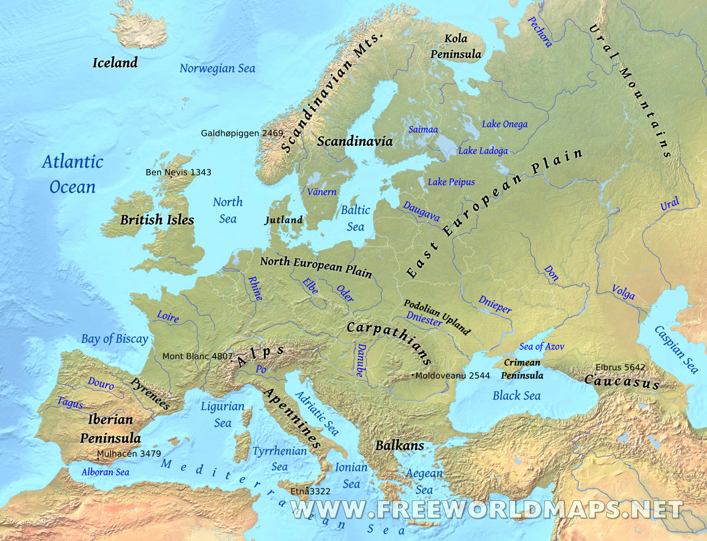
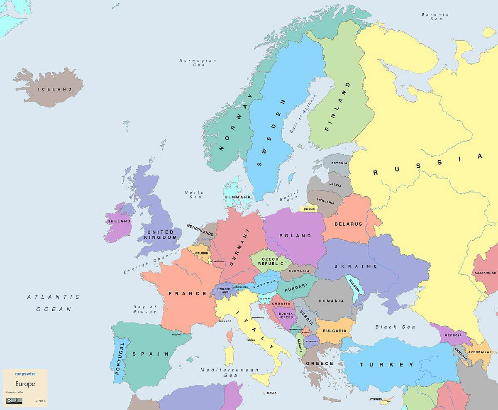
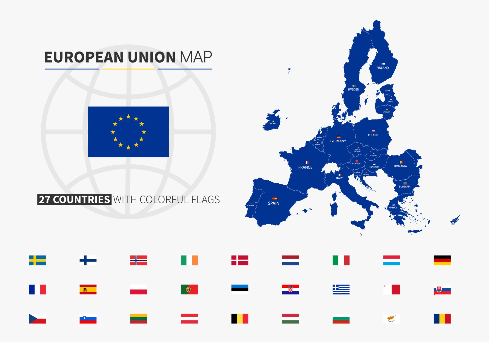
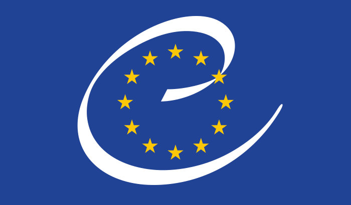
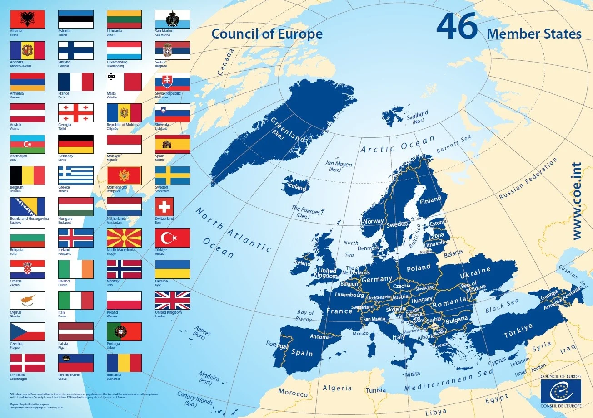
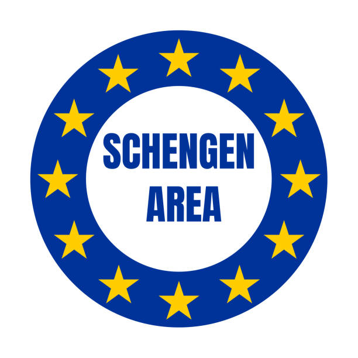
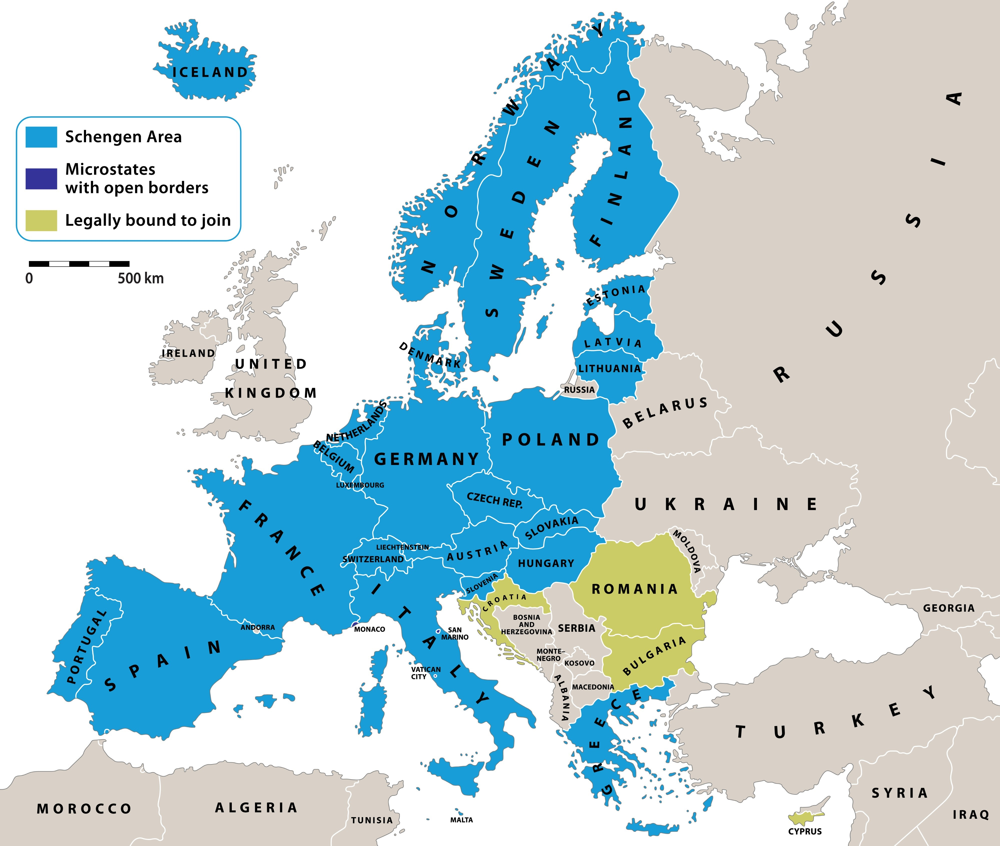
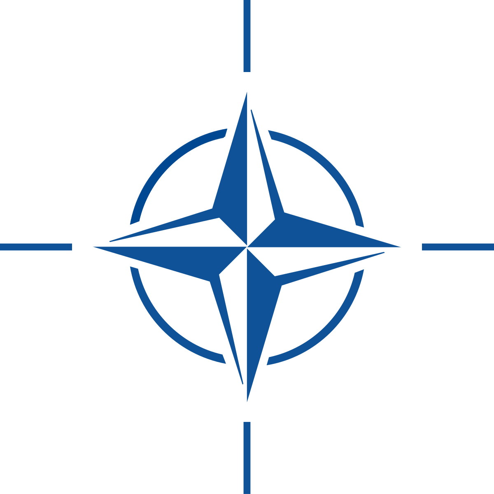
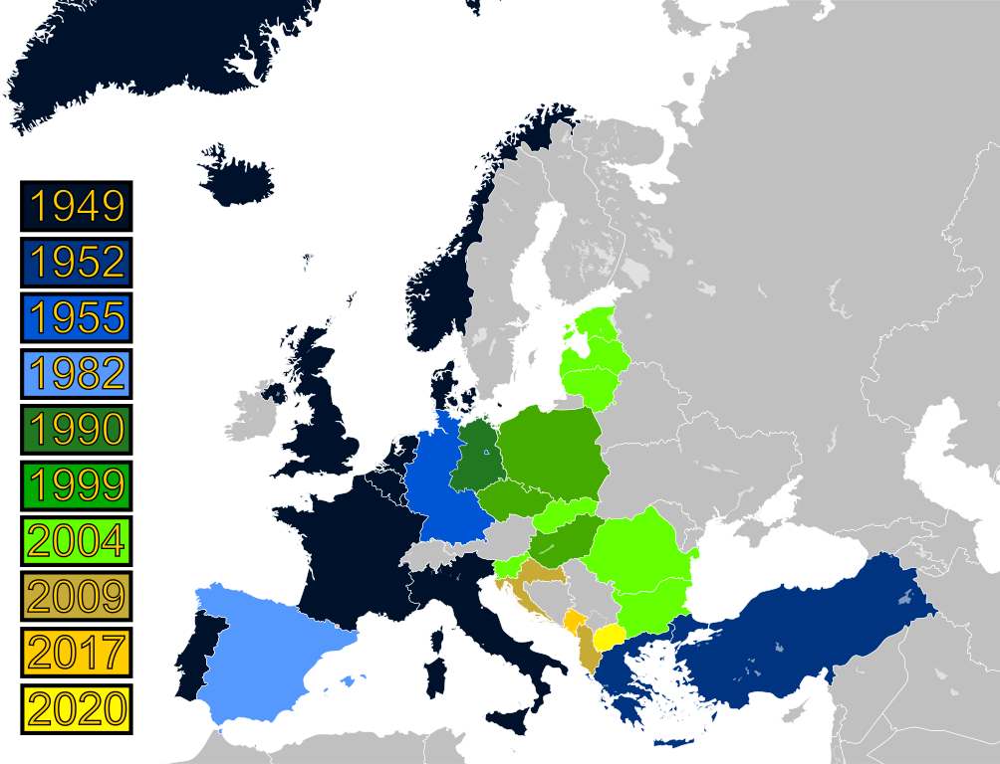

Географія Європи
Політична карта та інтеграційні процеси
УРОК 1: Економіко-географічне положення та політична карта Європи
Економіко-географічне положення (ЕГП) Європи
Географічне положення Європи є надзвичайно вигідним, що історично сприяло її розвитку як центру світової цивілізації та економіки.

Ключові особливості
Площа: 10,2 млн км²
Другий найменший континент
Омивається океанами
Атлантичним та Північним Льодовитим
Омивається морями
Середземним, Чорним, Балтійським та ін.
Східний кордон
Проходить Уральськими горами
Переваги ЕГП
Приморське положення
Вихід до світових торгових шляхів
Транспортна мережа
Густа сітка доріг, річок, каналів
Центральне положення
Перетин шляхів Азія-Африка-Америка
Сприятливий клімат
Комфортний для життя та господарства
Склад регіону
Європу умовно поділяють на чотири великі субрегіони. Загалом тут налічується близько 50 держав.
Західна Європа
Німеччина, Франція, Велика Британія, Ірландія, Італія, країни Бенілюксу.
Східна Європа
Україна, Польща, Чехія, Словаччина, Угорщина, Румунія.
Північна Європа
Країни Скандинавії (Норвегія, Швеція) та Балтії (Литва, Латвія, Естонія).
Південна Європа
Іспанія, Португалія, Греція, Хорватія та інші країни Балканського п-ва.

Сучасна політична карта та прояви сепаратизму
Сучасна політична карта Європи сформувалася внаслідок глобальних історичних подій: розпаду імперій після Першої світової війни, зміни кордонів після Другої світової, а також розпаду СРСР та Югославії наприкінці XX століття.

Незважаючи на інтеграційні процеси, в Європі існують осередки сепаратизму — прагнення певних народів чи регіонів до відокремлення та створення власної держави.
| Країна | Регіон | Характеристика та причини сепаратизму | Карта |
|---|---|---|---|
| Іспанія | Каталонія | Один з найбагатших регіонів Іспанії з власною мовою та культурою. Головні мотиви — економічні (вважають, що "годують" бідніші регіони) та історико-культурні. | |
| Іспанія | Країна Басків | Баски — етнос із унікальною мовою, що не належить до індоєвропейської сім'ї. Рух за незалежність має глибоке історичне коріння. | |
| Велика Британія | Шотландія | Має власну правову систему та парламент. Прагнення до незалежності посилилося після виходу Великої Британії з ЄС (Brexit), проти якого голосувала більшість шотландців. | |
| Велика Британія | Північна Ірландія | Конфлікт має релігійно-політичний характер: між протестантами-юніоністами (за збереження у складі UK) та католиками-націоналістами (за об'єднання з Республікою Ірландія). | |
| Італія | Північна Ліга (Паданія) | Політичний рух, що виступає за більшу автономію або незалежність багатих північних регіонів Італії (Паданії) від біднішого півдня. Основний мотив — економічний. | |
| Бельгія | Фландрія | Глибокий розкол між нідерландськомовною, економічно розвиненою Фландрією та франкомовною Валлонією. Причини — мовні, культурні та економічні. | |
| Сербія | Косово | Колишній автономний край Сербії, населений переважно албанцями. Проголосив незалежність у 2008 р. після збройного конфлікту. Визнаний більшістю країн Заходу, але не Сербією. | |
| Кіпр | Північний Кіпр | Острів розділений з 1974 року на грецьку (Республіка Кіпр, член ЄС) та турецьку (невизнана Турецька Республіка Північного Кіпру) частини. |
УРОК 2: Інтеграційні процеси та міжнародні організації
Після руйнівних світових війн європейські країни обрали шлях інтеграції — об'єднання для забезпечення миру та економічного процвітання. Це призвело до створення низки впливових міжнародних організацій.

Європейський Союз (ЄС)
Унікальний економічний та політичний союз, що налічує 27 держав-членів. Шлях до його створення був довгим:
- 1951 р. - Створення Європейського об'єднання вугілля та сталі.
- 1993 р. - Маастрихтський договір офіційно створює ЄС.
- 2004-2013 рр. - Хвилі розширення на Схід.
- 2020 р. - Велика Британія виходить зі складу ЄС (Brexit).
Основні принципи:
- Чотири свободи: вільний рух товарів, послуг, капіталу та людей.
- Спільна валюта: євро (€) є офіційною для 20 країн єврозони.
- Спільна політика: у сферах торгівлі, сільського господарства, безпеки.


Рада Європи
Міжнародна організація (46 країн-членів), що фокусується на захисті прав людини, демократії та верховенства права. Не варто плутати її з інституціями ЄС.
Ключова діяльність:
- Заснована: 1949 року.
- Штаб-квартира: Страсбург, Франція.
- Найважливіший орган: Європейський суд з прав людини (ЄСПЛ), куди може звернутися будь-який громадянин країни-члена.


Шенгенська зона
Територія, що включає 27 європейських країн, які скасували прикордонний контроль на своїх внутрішніх кордонах. Це одне з найбільших досягнень європейської інтеграції.
Принципи роботи:
- Безвізовий простір: вільне пересування людей без паспортного контролю.
- Спільна візова політика: єдина віза для в'їзду в зону.
- Посилені зовнішні кордони: ретельний контроль на кордонах з країнами, що не входять до зони.
Важливо: не всі країни ЄС є членами Шенгену (напр., Ірландія), і навпаки, деякі країни не з ЄС входять до зони (Швейцарія, Норвегія).


НАТО (Організація Північноатлантичного договору)
Військово-політичний альянс, створений у 1949 році для колективної оборони. Наразі об'єднує 32 держави, більшість з яких — європейські.
Основа Альянсу:
- Колективна оборона: Стаття 5 договору стверджує, що напад на одного члена є нападом на всіх.
- Стримування агресії: Гарантування безпеки та стабільності в євроатлантичному регіоні.
- Політика "відкритих дверей": Альянс відкритий для вступу нових демократичних країн, що посилює загальноєвропейську безпеку.
